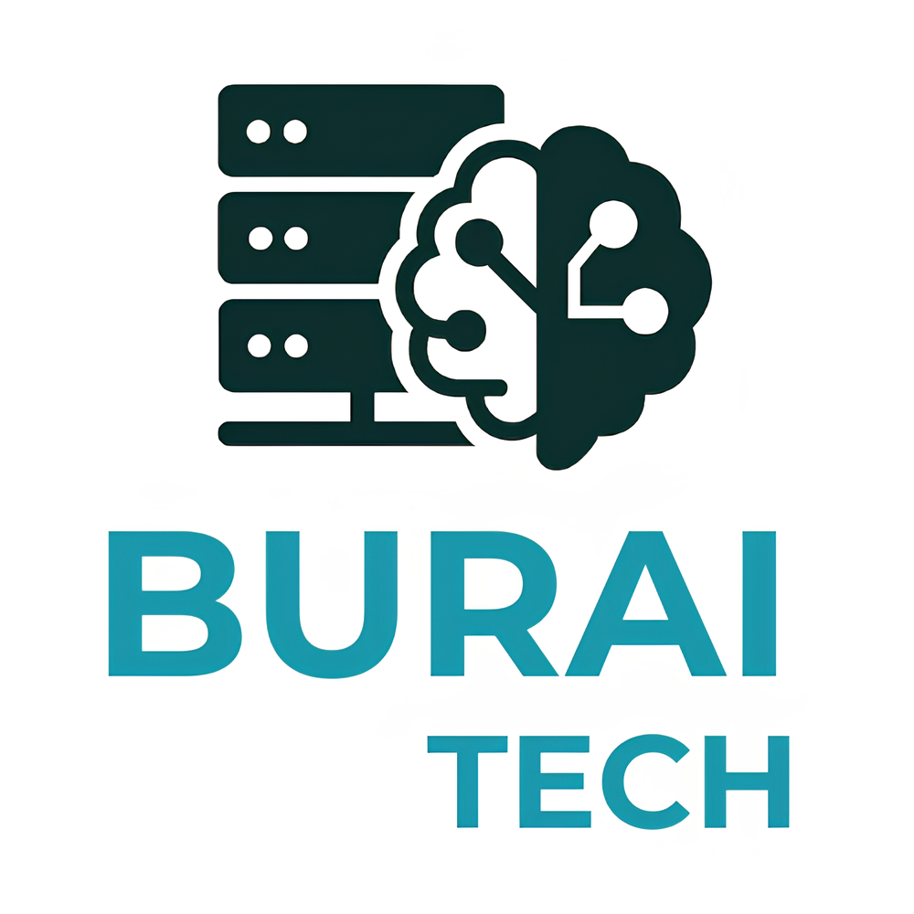
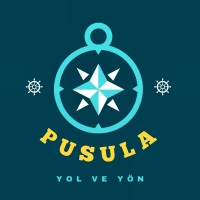
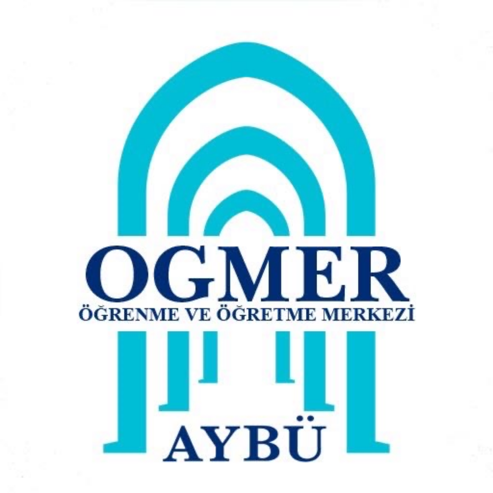
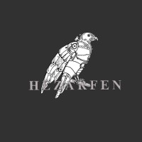
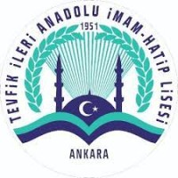
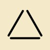

Professional Experience

May 2025 - June 2025
Project Leader
AYBU ÖĞMER | Burai Tech
- Led a team to design and develop a document-interactive AI agent using LLaMA 3 and PySide6.
- Assigned tasks, conducted prompt engineering, designed modular architecture.
- Developed NLP features (summarization, paraphrasing, QA) with the team.
- Tested multi-language capabilities, file parsing (PDF, DOCX, TXT), and integrated avatar video rendering.

October 2024 - Present
Embedded Software Developer
PUSULA USV, Ankara, Turkiye
- Implemented autonomous motion algorithms using Python for unmanned marine vehicle.
- Designed and deployed systemd services for automatically launching ROS 2 nodes for Lidar, ZED Camera, autonomous algorithm and system logs on Jetson board.
- Collaborated with the electrical team to perform integration and live sensor tests, including A2M12 Lidar integration, ZED 2 Camera's detection, Pixhawk motor tests and GPS.
- Built a ground control station for monitoring and controlling the unmanned marine vehicle.
- Performed real-world tests on the actual marine vehicle.

August 2024 - May 2025
Bootcamp Tutor & Student Mentor
Ankara Yıldırım Beyazıt University, Ankara, Turkiye
- Led a summer bootcamp aimed at introducing college students to front-end web development, with a focus on HTML, CSS, and the foundations of how the web works. Fostered a supportive and engaging environment to help beginners build confidence and create simple, functional websites.
- Represented my university at many international conferences, showcasing our initiatives at the Learning and Teaching Center.
- Provided technological support and mentorship to engineering freshmen, assisting them under the "Meet Your Student Tech Staff" program, helping them navigate academic and technical challenges.

September 2023 - June 2024
Avionics Team Member
Aybü HEZARFEN Club | Gökçen Rocket Project, Ankara, Turkiye
- Conducted research to determine suitable sensors for the system.
- Contributed to the flight control board and assisted in integrating sensors and components.
- Performed initial testing of the avionics system with team and documented the avionics system in detail for Teknofest.
Education
September 2023 - June 2028 (Expected)
Bachelor of Science, Computer Engineering
Ankara Yıldırım Beyazıt University, Ankara, Turkiye
Current GPA: 3.36/4.00
Activities and societies: AYBÜ Hezarfen Student Club & Developer Students Community & IEEE Student Branch - AYBU

September 2019 - June 2023
High School Diploma
Tevfik İleri Anatolian High School, Ankara, Turkiye
Graduated with the grade of 96.43
Volunteering Works

October 2023 - February 2024
Podcast Host
Trio of Thought, Ankara, Turkiye
- As an engineering student with a passion for AI technologies, I co-published the 'Trio of Thought' podcast with my two colleagues. I served as the podcast host, where we discussed new technologies and developments, particularly in AI. In addition to hosting, I also contributed as a transcript writer.
- You can still access our Spotify account from the link below.
Trio of Thought (Spotify Podcast)
March 2020 - July 2023
Writer & Editor
Civil Society Organizations in Ankara, Turkiye
- I worked as a writer in several school magazines, blogs and local civil society organizations.
- After doing it for a while, with influence of my writing skills, I became an editor on one of the blog websites. We published more than 50 articles in 8 months. During this process, I have reduced writing and contextual errors to almost zero.
- Currently, I have more than 10 articles I have written in my writing profession,
which I am still doing as a hobby. You can reach a website where
I have blogged a few of my articles with the link I have added below.
Tarihi Kalem (Blog Website)